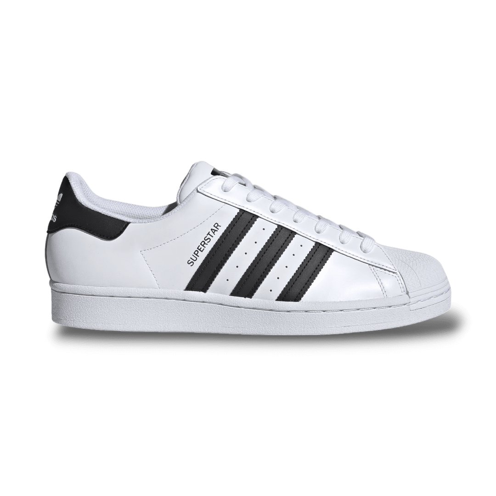
Super Star
R$499,99
O Adidas Superstar é um tênis clássico, lançado em 1969, famoso pela biqueira de borracha em concha. Inicialmente um modelo de basquete, virou ícone de estilo, especialmente no hip-hop.
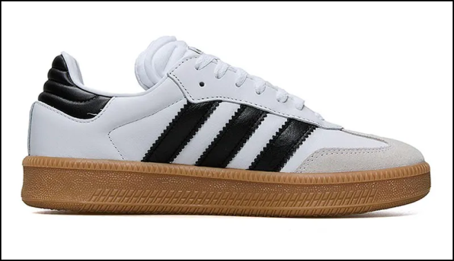
Samba
R$379,99
O Tênis Samba da Adidas é um clássico urbano, com design inspirado no futebol de salão. Feito com couro ou camurça e sola de borracha, combina estilo retro e conforto, sendo ideal para o dia a dia. Suas 3 listras laterais e biqueira distinta são marcas registradas.
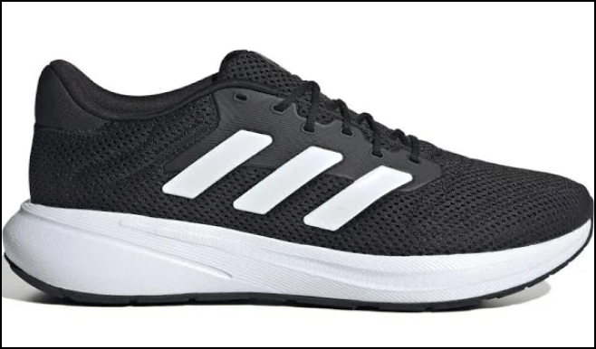
Response Runner
R$419,99
O Response Runner da Adidas é um tênis confortável e versátil, com design inspirado nos anos 2000. Conta com amortecimento de EVA e uma parte superior respirável, garantindo conforto e suporte durante corridas e treinos. Ideal para quem busca estilo e desempenho.
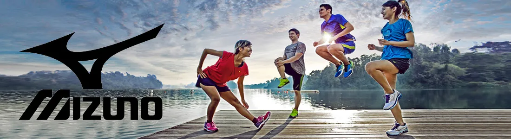
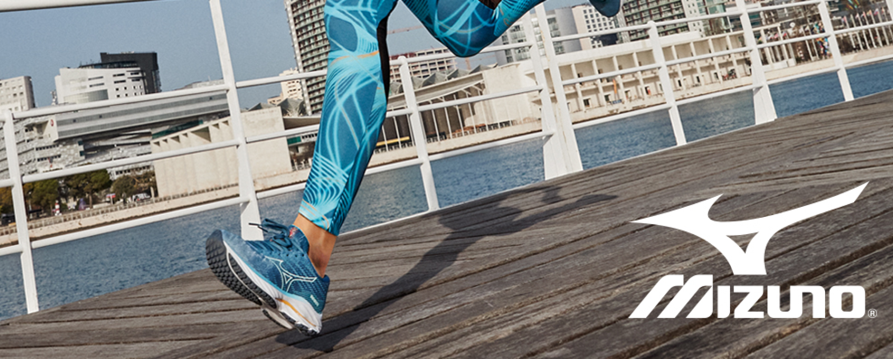
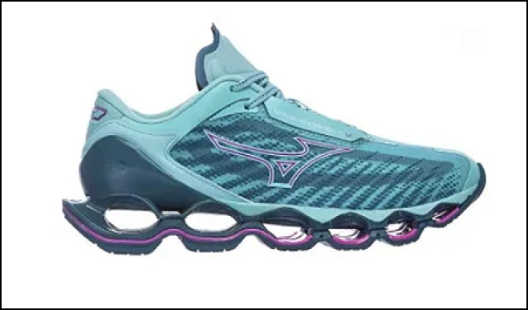
Prophecy 8
R$419,99
O Mizuno Prophecy 8 é um tênis de alto desempenho, desenvolvido para corredores que buscam conforto e amortecimento superior. Com a tecnologia Mizuno Wave, ele oferece estabilidade e absorção de impacto em cada pisada. Seu design futurista e a entressola de alto rebound garantem uma corrida suave e responsiva, ideal para treinos longos e intensos.
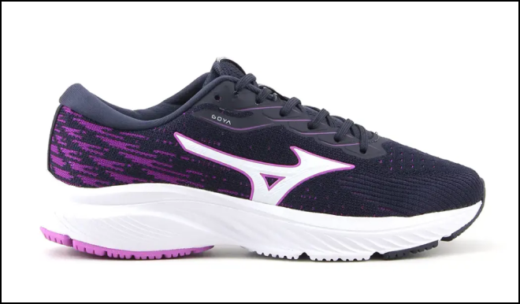
Jet 2
R$429,99
O Jet 2 é um modelo versátil da Mizuno, focado em conforto e durabilidade. Seu design moderno e a entressola com espuma EVA garantem amortecimento eficiente, sendo ideal para corridas e atividades físicas intensas.
.png)
Goya 2
R$369,99
O Goya 2 da Mizuno é um tênis de corrida leve e confortável, ideal para treinos diários. Com tecnologia Mizuno Wave na entressola, oferece excelente amortecimento e estabilidade, proporcionando uma pisada suave e responsiva.
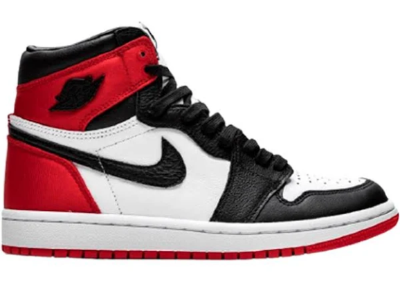
Air Jordan 1
R$569,99
O Air Jordan 1 é um clássico dos tênis de basquete, lançado originalmente em 1985. Com seu design icônico e combinação de couro e sintético, o modelo oferece conforto e estilo, tanto dentro quanto fora das quadras. Seu amortecimento e suporte o tornam uma escolha popular para atletas, enquanto o visual atemporal faz dele um favorito entre os fãs de sneakers.
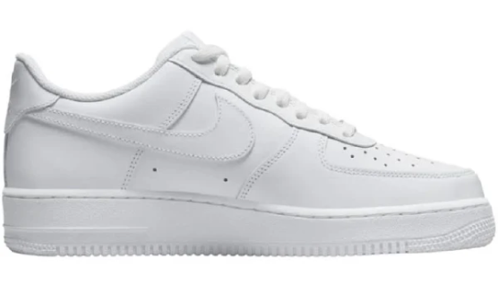
Air Force
R$769,99
O Nike Air Force 1 é um ícone lançado em 1982, conhecido por seu design clássico e durabilidade. Com amortecimento Air na entressola, oferece conforto o dia todo, sendo perfeito tanto para o basquete quanto para o estilo urbano.
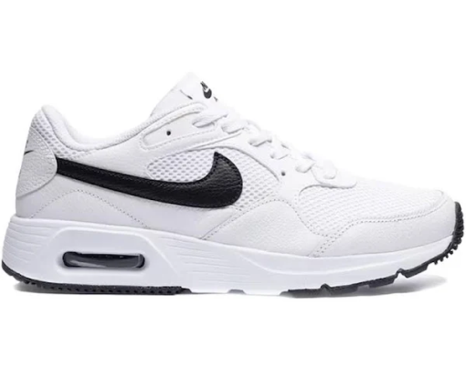
Air Max
R$719,99
O Nike Air Max é um ícone de conforto e estilo, famoso pela tecnologia de amortecimento visível na entressola. Lançado em 1987, o modelo combina inovação e design moderno, oferecendo suporte e leveza para corridas e uso diário, com um visual que permanece atemporal e altamente valorizado no universo dos sneakers.
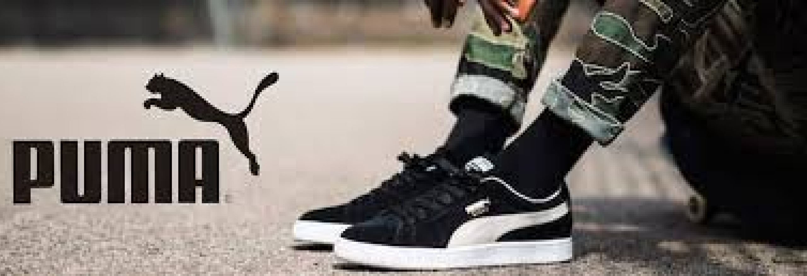
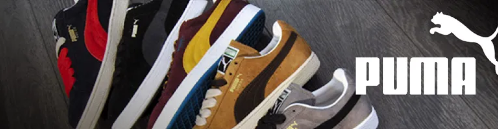

Suede
R$579,99
O Puma Suede é um clássico atemporal, lançado em 1968. Com seu design simples e elegante, ele é feito com cabedal em camurça, oferecendo durabilidade e conforto. Ideal para o uso diário, o modelo combina estilo retrô com versatilidade, sendo popular tanto no streetwear quanto em looks casuais.
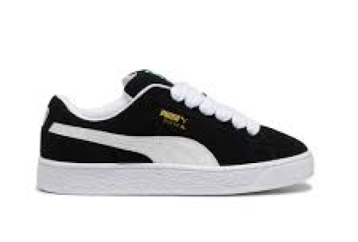
RBD Game
R$639,99
O Puma RBD Game é um tênis inspirado no estilo urbano e no legado da cultura pop, com um design moderno e arrojado. Com sua parte superior em couro e detalhes em camurça, oferece conforto e durabilidade. A entressola de EVA proporciona amortecimento leve, tornando-o ideal para o uso diário e para quem busca um visual descolado e cheio de atitude.
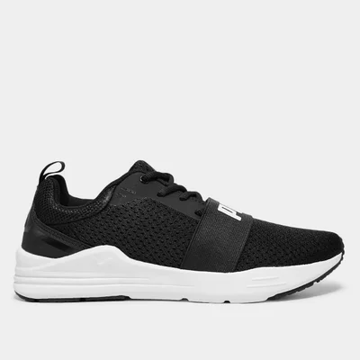
Wired Run
R$619,99
O Puma Wired Run é um tênis de desempenho com design moderno e aerodinâmico, ideal para quem busca conforto durante atividades físicas. Sua parte superior em malha respirável proporciona leveza e ventilação, enquanto a entressola de EVA oferece amortecimento eficiente. Com visual esportivo e versátil, é perfeito para treinos ou uso casual no dia a dia.